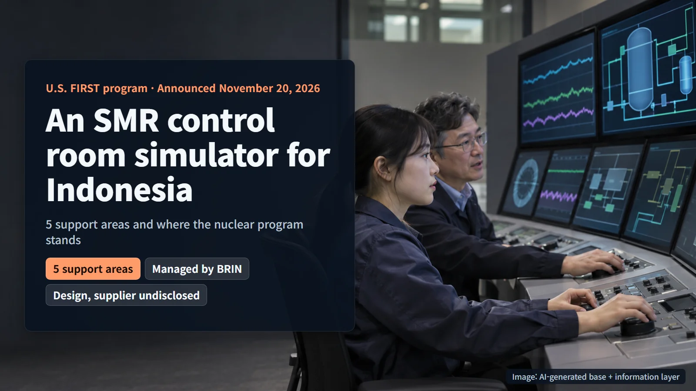
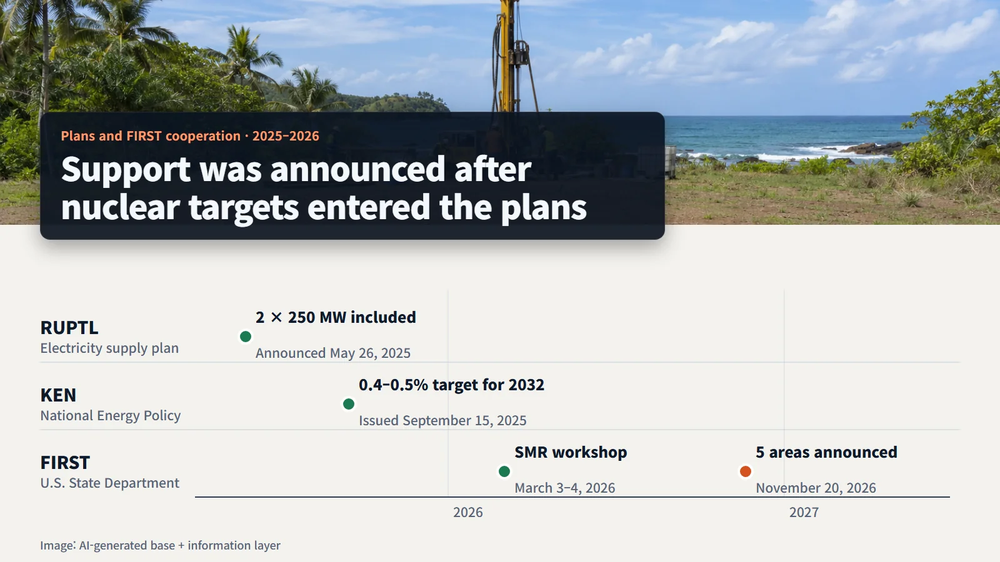
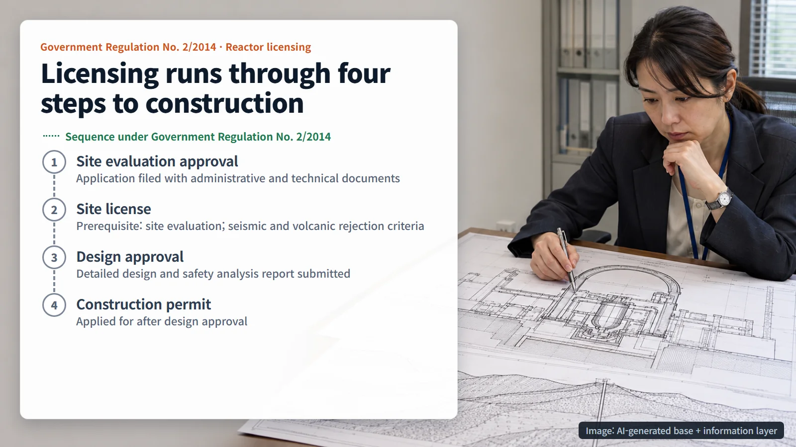

SMR foundational support
An SMR Control Room Simulator for Indonesia: Five Areas of U.S. FIRST Support and Where the Nuclear Program Stands
Support for training, siting and regulation, set against Indonesia's national plans and licensing rules
In a country preparing for its first nuclear power plant, people and institutions come before the reactor. On November 20, 2026, the U.S. Embassy in Jakarta announced that the United States will provide Indonesia with a small modular reactor (SMR) control room simulator and technical assistance. With this announcement Indonesia gains a training tool for future operators and support for siting and regulation. For other Southeast Asian countries weighing nuclear power, it shows what U.S. foundational support contains. This post sets out the five support areas and where Indonesia's nuclear program stands, using public documents.

The Embassy Announcement and Indonesia's Welcome
According to the embassy, the United States announced the SMR control room simulator at the East Asia Summit in Manila, Philippines, on November 17. A control room simulator is a training device built to replicate a reactor control room. Much as pilots learn procedures in a flight simulator, operators use it to practice startup, shutdown and responses to abnormal conditions.
The support runs through the U.S. Department of State's Foundational Infrastructure for Responsible Use of Small Modular Reactor Technology (FIRST) program. The embassy wrote that the aim is to help establish Indonesia as a regional SMR hub, and that the announcement follows a Memorandum of Cooperation (MOC) on SMR deployment signed by the U.S. Secretary of State and his counterparts from Japan and the Republic of Korea.
Indonesia's Foreign Affairs Ministry spokesperson welcomed the support after a media briefing on November 26. The ANTARA news agency quoted him as saying, "We welcome this technology, which will be managed by the National Research and Innovation Agency (BRIN)." He added that BRIN experts would determine the technical aspects and future use of the assistance.
So what this announcement settles is the kinds of support and the Indonesian agency that will manage the equipment. The reactor design the simulator will model, its supplier and the installation schedule are absent from the embassy statement, which describes the training content only as "U.S. SMR technology."
FIRST Program Tools and the Five Support Areas
FIRST is administered by the Office of Cooperative Threat Reduction in the State Department's Bureau of International Security and Nonproliferation. The department's funding notice dated June 6, 2025 lists the program's tools as workshops, technical consultancies, study tours, feasibility studies, SMR simulators and regional training hubs, and site visits. The notice says the support is delivered in line with the Milestones Approach of the International Atomic Energy Agency (IAEA), and it names Indonesia, Malaysia, the Philippines, Singapore and Thailand as priority partners in Southeast Asia.
The embassy lists 5 areas of support for Indonesia. Setting each area beside an Indonesian agency or rule shows whose work the support feeds into. In the table, BAPETEN is Indonesia's Nuclear Energy Regulatory Agency (Badan Pengawas Tenaga Nuklir, BAPETEN) and KEN is the National Energy Policy (KEN).
| Area | What the United States will do | Indonesian agency or rule it connects to |
|---|---|---|
| Training hub | Train technicians and future operators on an SMR control room simulator | BRIN manages the equipment |
| Site selection | Siting studies to find suitable SMR sites | Site evaluation approval and site license (BAPETEN review) |
| Regulatory readiness | Licensing and regulatory support | Design approval and construction permit (BAPETEN review) |
| Workforce | Nuclear engineering curricula developed by U.S. universities and Indonesian institutions | Counterpart institution unconfirmed |
| Waste management | Training sessions and site visits on SMR radioactive waste and spent fuel | Radioactive waste management requirement in KEN |
(Source: reconstructed from the U.S. Embassy Jakarta media note, ANTARA reporting, Indonesia's Convention on Nuclear Safety national report and Indonesia's National Energy Policy)
The five areas are training, siting, regulation, workforce and waste. They correspond to the simulators and regional training hubs in the State Department's list of tools, and they belong to the workforce, siting and regulatory foundations a country builds before it orders a plant.
FIRST cooperation was also active in March. The governments of Indonesia, the United States and Japan held a FIRST workshop on SMR deployment on March 3–4, 2026, followed by a regulators-only discussion on March 5. The March agenda and the November support areas overlap on regulatory and workforce capacity. Whether the two activities are consecutive steps under one agreement has not been confirmed in public documents.
Nuclear Targets in the National Energy Policy and the Electricity Supply Plan
Indonesia wrote nuclear power into two planning documents in 2025. The Electricity Supply Business Plan (RUPTL) 2025–2034 of the state power company, announced by the Ministry of Energy and Mineral Resources on May 26, 2025, includes 2 small reactors of 250 MW each, in Sumatra and Kalimantan. The ministry's release gives the capacity and the regions and leaves the reactor design unstated.
KEN was issued on September 15, 2025 as Government Regulation No. 40/2025, replacing Government Regulation No. 79/2014. It sets targets for nuclear energy's share of primary energy supply at 0.4–0.5% in 2032, 2.8–3.4% in 2040, 6.8–7.0% in 2050 and 11.7–12.1% in 2060, on the condition that the economics are met.
These numbers show a small starting point and a long path. Dividing the 2060 target by the 2032 target gives about 24 times at the upper bound (12.1 ÷ 0.5) and about 29 times at the lower bound (11.7 ÷ 0.4). The plan is to raise the share more than twentyfold over the 28 years from 2032 to 2060. Following that path requires operators and regulatory reviewers to be trained ahead of the plants, and the simulator training hub is part of that preparation.
Placing the planning documents and the U.S. support activities in date order shows that the workshop and the support announcement came after nuclear targets entered the plans.

Roles of the Implementing Organization and the Regulator, and Four Licensing Steps
Once targets are in the plans, the program needs a body that recommends construction and an agency that reviews it. Article 55 of KEN makes the construction and operation of nuclear power plants subject to a recommendation from the Nuclear Energy Programme Implementing Organization (NEPIO) and to approval by the regulatory body. It leaves the detailed provisions on the implementing organization to a presidential regulation.
Whether the presidential regulation on the implementing organization has been issued is unconfirmed in public documents. The IAEA carried out an Integrated Nuclear Infrastructure Review (INIR) mission, which checks a country's readiness for nuclear power, on November 23–27, 2009 and made 14 recommendations and 17 suggestions. In a 2020 presentation, Indonesia's National Nuclear Energy Agency (Badan Tenaga Nuklir Nasional, BATAN, now merged into BRIN) recorded one of those recommendations, identifying the plant owner and operator, as "not defined yet." That record dates from 2020, and the status since then is unconfirmed in public documents.
Review belongs to BAPETEN, the independent regulatory body. Meeting a delegation from the U.S. Millennium Challenge Corporation (MCC) on February 27, 2026, BAPETEN explained that the decision to build a plant rests with the government and that its own function is to ensure compliance with safety, security and safeguards.
Under Government Regulation No. 2/2014, licensing up to construction runs through four steps: site evaluation approval, site license, design approval and construction permit. The site evaluation approval is applied for with administrative and technical documents, and site evaluation is a prerequisite for the site license. BAPETEN Regulation No. 4/2018 treats seismic and volcanic hazards as site rejection criteria. The licensee submits the detailed design and a safety analysis report to obtain design approval, then applies for the construction permit.

Two further requirements apply to building a commercial power reactor. All structures, systems and components important to safety must have been tested in a relevant environment or under operating conditions and applied in a prototype, and the design must hold a commercial operation license from the regulator of a country that has built a commercial nuclear power plant. BAPETEN told the MCC delegation that any proposed design needs an adequate track record, including prior licensing or operational experience in other countries.
Placed on this structure, the U.S. siting studies meet the first step, site evaluation, and the regulatory support meets BAPETEN's review work for design approval and the construction permit.
Items Absent from Public Documents and the Next Documents to Watch
Three items are absent from public documents. The first is the simulator's reactor design and supplier, its host institution and its schedule. The second is whether and when the presidential regulation on the implementing organization is issued. The third is the schedule of an INIR update mission. In an article dated March 2, 2026, BAPETEN said the government plans to update its national readiness assessment through an INIR mission.
The next documents to watch follow from these. When the presidential regulation is issued, the body that recommends plant construction and operation will be identified. The report of the INIR update mission will serve as a reference for assessing Indonesia's infrastructure readiness. When the simulator's host institution, design and schedule are announced, the training hub will take concrete shape.
In short, this U.S. support is a foundation-building effort for training, siting and regulatory capacity. Indonesia has written nuclear targets into its National Energy Policy and its electricity supply plan, and it has a licensing framework in place. The reactor design, the supplier and the implementing organization that would recommend construction are unconfirmed as decided in public documents, and Indonesia's position will become more specific as the documents above appear.